Why Most Systems Fail vs. How This Architecture Closes the Link
Digitizing 3.2 GHz of direct RF spectrum generates over 30 Gigabits per second of raw data. Streaming this volume directly to Earth is physically impossible on a 100–150 kg smallsat. How we close the link: The spacecraft carries an onboard FPGA edge processor (Innoflight CFC-400) running a 1024-channel Polyphase Filter Bank. It discards 99.9% of empty dead space in orbit and extracts only compact Pulse Descriptor Words (PDWs). Millions of radio pulses condense into a lightweight megabyte stream that beams down to ground stations or crosslinks across the constellation via laser in under 15 seconds.
• AOA Mode: Simultaneously digitizes all 4 spiral antennas to compute nanosecond phase delays (Δφ) for instant line-of-bearing.
• High-Gain Mode: Routes high-gain parabolic/helical feeds for deep pulse demodulation.
[ Deployable Helical (UHF/L/S) ] ──┼──► [ RFFE: Limiters & LNAs ] ──► [ Fast RF Switch Matrix ] ──► [ 4-Channel Coherent SDR ] ──► [ FPGA Edge Processor ]
[ Parabolic Mesh Dish (C/X) ] ─────┘ (Burnout Protection) (AOA vs High-Gain Select) (3.2 GSPS Direct Sampling) (Innoflight CFC-400 PDWs)
• Geolocation Fix Accuracy: Produces a ground error ellipse of 10 to 50 km CEP on a single 3-to-5 minute orbital overpass.
• Operational Utility: Highly effective for regional threat assessment, verifying whether a radar or jammer is active in a military district, and cataloguing electronic signatures.
• Operational Limit: Revisit cadence is 6 to 12 hours between passes over a given region, and it cannot geolocate short (< 1 sec) frequency-hopping bursts with high precision.
- Revisit: 6 – 12 hours
- Single-pass AOA bearing line
- Doppler inflection ranging
- Validates payload & antennas
- Revisit: 4 – 6 hours
- 1D Time-Difference of Arrival
- Shrinks along-track ellipse
- Cues maritime patrol aircraft
- Single-burst geolocation (< 1s)
- Multi-satellite TDOA hyperbolas
- Sub-nanosecond CSAC sync
- Pinpoints tactical radios & radars
- Revisit: 15 – 30 minutes
- Global persistent monitoring
- Tracks mobile naval strike groups
- Autonomous SAR/Optical cueing
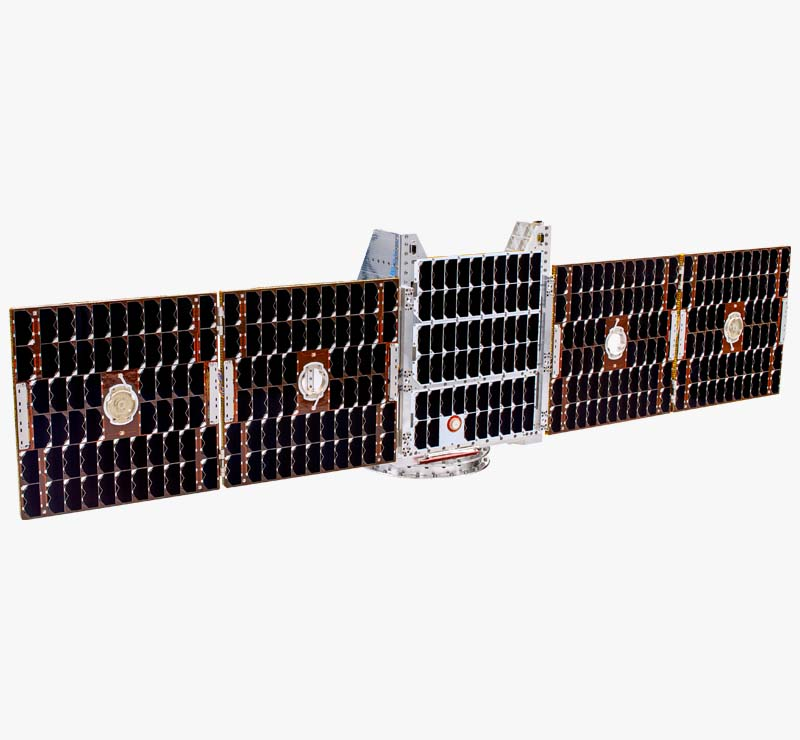
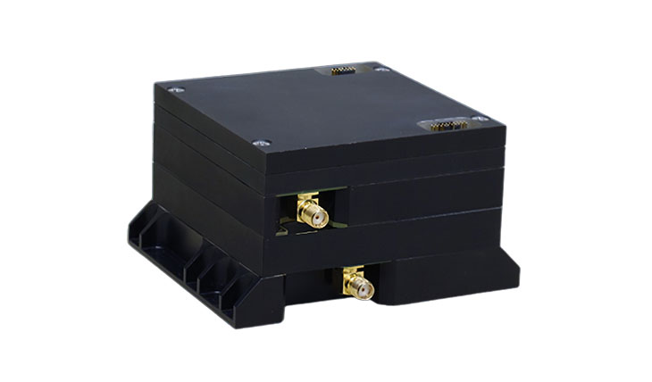
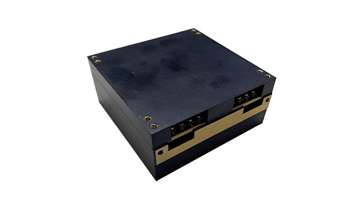
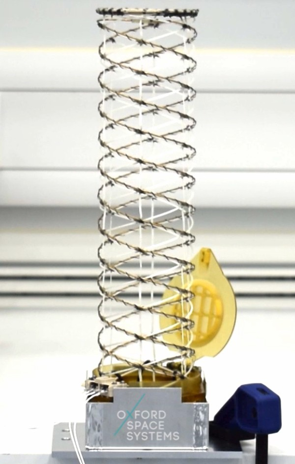
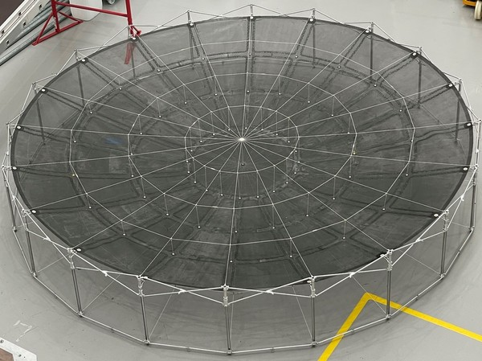
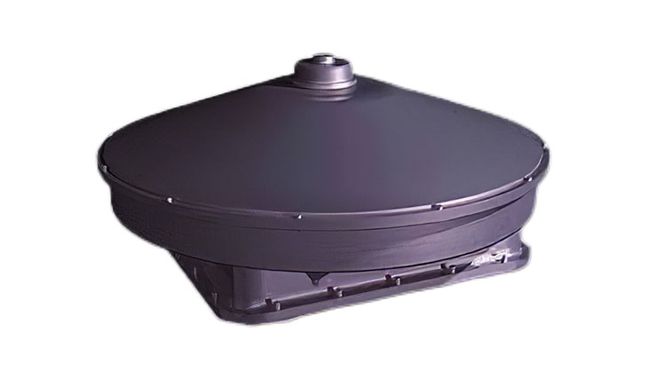
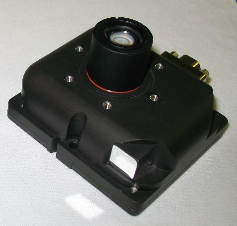
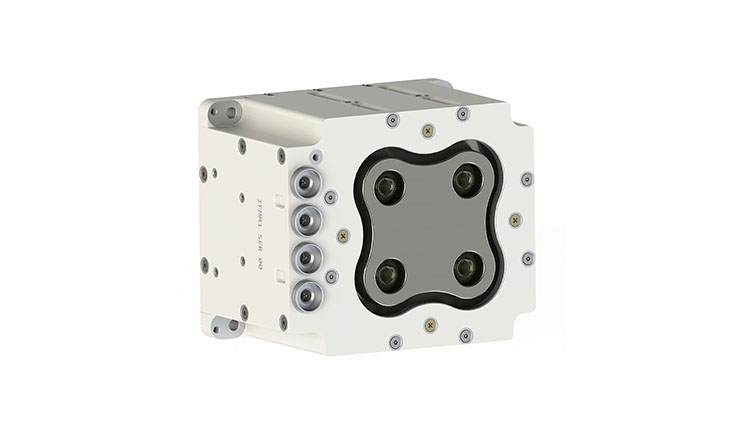
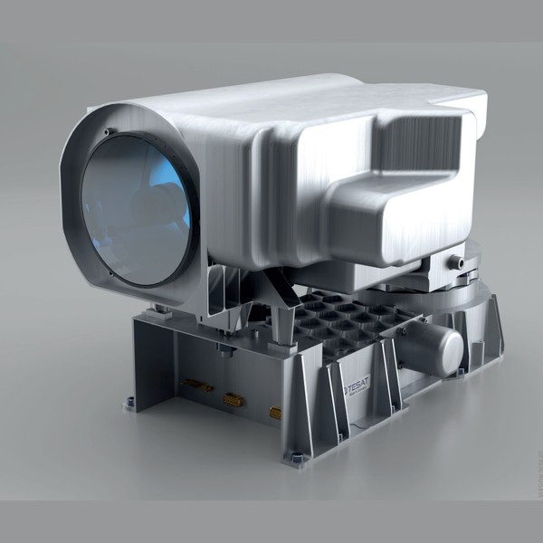
• Orthogonal 4-element cavity spiral phase interferometer array (0.55m baseline for AOA direction finding)
• Deployable C/X-band offset parabolic reflector feed
• Dual Sinclair ST-16RT2 star tracker optical heads with 35° stray-light baffles
• Innoflight CFC-400 flight computer running real-time FPGA Polyphase Filter Banks and PDW extraction
• Microchip SA.45s Chip-Scale Atomic Clock (CSAC) providing sub-nanosecond constellation time sync
• Electrical Power System (EPS) 28V regulated distribution unit & 480 Wh LiFePO4 battery pack
• Dual loop heat pipes routing payload thermal dissipation to external radiator panels
• Enpulsion Micro R3 FEEP electric thruster with 14.5 kg solid indium propellant
• 3-axis magnetic torque rods for momentum desaturation during orbital night
• Separation microswitches and battery charging umbilical interface
• Clean separation push-springs and grounding harness
• Fore and aft Tesat SCOT80 optical laser crosslink turrets (10 Gbps inter-satellite mesh)
| Domain | Manufacturer | Component / Model | TRL | Key Specifications | Mass | Power | Data Interface | Export Status |
|---|---|---|---|---|---|---|---|---|
| Bus Platform | Moog Space & Defense (USA) | ESPA Grande / SL-Flex | TRL 9 | 24" ESPA interface, >50 Hz lateral stiffness, handles 180 kg wet | 30.0 kg dry | Passive | ESPA Clampband | US ITAR |
| Bus Platform | AAC Clyde Space (UK/SWE) | EPIC-150 Modular Bus | TRL 9 | Aluminum honeycomb frame, rad-hard avionics vault, 150 kg wet envelope | 32.0 kg dry | Passive | SpaceWire, CAN | Non-ITAR / UK |
| Bus Platform | Apex Space (USA) | Aries Platform (100–150 kg) | TRL 8–9 | Serial manufacturing line, payload capacity up to 120 kg, 15" Marmon ring | 45.0 kg bus | Passive | Ethernet, CAN | US EAR99 |
| Bus Platform | Kongsberg NanoAvionics (LTU) | MP50 Microsatellite Bus | TRL 9 | 85-liter payload volume, 200W thermal rejection heat pipe network | 35.0 kg dry | Passive | SpaceWire, RS-485 | Non-ITAR / EU |
| Bus Platform | York Space Systems (USA) | S-CLASS Commercial Bus | TRL 9 | Proliferated defense standard, 3-axis stabilized, payload fraction > 40% | 40.0 kg dry | Passive | RS-422, SpaceWire | US ITAR |
| EPS & Solar | Spectrolab / Boeing (USA) | XTJ Prime GaInP/GaInAs/Ge | TRL 9 | 30.7%–32.0% efficiency, rad-hard >10¹⁵ e/cm², temp coeff -0.18%/°C | Bare cells / CICs | 32% BOL eff | PDU Bus Rail | US ITAR |
| EPS & Solar | DHV Technology (Spain) | DSW-150 Tracking Wings | TRL 9 | Dual carbon wings with SADM, 450W peak BOL, 320W OAP @ 600 km LEO | 7.5 kg / wing | 450W peak | SADM Step Pulse | Non-ITAR / EU |
| EPS & Power | GomSpace (Denmark) | NanoPower P200 + BP8 Battery | TRL 9 | 28V regulated power bus, >96% MPPT conversion, 480 Wh Li-Ion battery pack | 8.5 kg | >96% efficiency | CAN, I2C | Non-ITAR / EU |
| EPS & Solar | SolAero by Rocket Lab (USA) | IMM Inverted Metamorphic | TRL 9 | 33.0% efficiency, ultra-lightweight composite substrate < 1.8 kg/m² | Panel modules | 33% BOL eff | PDU Interface | US ITAR |
| EPS & Solar | Oxford Space Systems (UK) | Deployable High-Area Array | TRL 8 | Flexible composite rollout panel, 350W peak, compact stowed volume | 6.2 kg | 350W peak | Deploy Actuator | Non-ITAR / UK |
| ADCS Pointing | Blue Canyon Tech (USA) | BCT X-SAT / FleXcore Suite | TRL 9 | Pointing accuracy < 0.005° (18 arcsec) 1σ, slew 3.5°/s, RWP100 wheels | 8.0 kg suite | 15–25W nominal | RS-422, CAN | US ITAR |
| ADCS Pointing | Adcole Space (USA) | MAI-500 ADCS Suite | TRL 9 | Sub-arcminute determination, integrated reaction wheels + torque rods | 4.5 kg | 12W nominal | RS-422 | US ITAR |
| ADCS Pointing | Sinclair / Rocket Lab (CAN) | RW3-1.0 Reaction Wheels | TRL 9 | 1.0 Nms momentum storage, ultra-low high-frequency jitter < 1.5 mN | 2.2 kg | 8W nominal | RS-485, CAN | Non-ITAR / CAN |
| ADCS Pointing | CubeSpace (South Africa) | CubeControl Large Suite | TRL 9 | 0.02° 3-axis pointing accuracy, dual star tracker heads, high-torque wheels | 5.5 kg | 10–18W | CAN, UART | Non-ITAR / ZAF |
| ADCS Pointing | Sensonor (Norway) | STIM300 / STIM377H IMU | TRL 9 | Tactical grade gyro bias stability 0.15°/hr, angular random walk 0.07°/√hr | 0.055 kg | 1.5W | RS-422 | Non-ITAR / NOR |
| Propulsion | Exotrail (France) | spaceware-M Hall Thruster | TRL 9 | Thrust 8–18 mN, Isp 1,200–1,500s, Xenon/Krypton, >200 m/s ΔV on 130 kg | 9.5 kg wet | 180–250W burn | CAN, RS-485 | Non-ITAR / FRA |
| Propulsion | Enpulsion (Austria) | ENPULSION Micro R3 FEEP | TRL 9 | Indium liquid metal ion thruster, Isp 2,000–4,500s, thrust 0.1–1.5 mN | 4.5 kg wet | 20–40W | CAN, RS-422 | Non-ITAR / AUT |
| Propulsion | Busek Co. (USA) | BHT-350 Hall Effect Thruster | TRL 9 | 16 mN thrust, Isp 1,350s, 350W nominal, compact propellant feed system | 10.0 kg wet | 350W nominal | RS-422 | US ITAR |
| Propulsion | Benchmark Space Systems (USA) | Halcyon Green Chemical Biprop | TRL 8–9 | Thrust 1.0–2.5 N, HTP green propellant, rapid collision avoidance impulse | 8.0 kg wet | 15W standby | CAN, Discrete | ITAR-Free / USA |
| Propulsion | Dawn Aerospace (NZL/NLD) | B20 Green Bi-propellant Thruster | TRL 9 | Nitrous oxide (N2O) & Propylene (C3H6), 20 N thrust, Isp 285s, non-toxic | 7.5 kg dry | 10W heaters | CAN, RS-485 | Non-ITAR / NZ-EU |
| SDR Payload | Epiq Solutions (USA) | Sidekiq X4 Multi-Channel SDR | TRL 8–9 | 1 MHz to 18 GHz continuous, 400 MHz IBW (or 800 MHz single), 14-bit ADC | 1.8 kg (3U VPX) | 30–45W | PCIe, SpaceWire | US ITAR |
| SDR Payload | CAES / Cobham (USA) | Space VPX Wideband Receiver | TRL 9 | 100 krad TID rad-hard, sub-octave preselection switch filter banks, low phase noise | 2.5 kg | 40W | SpaceWire, AXI | US ITAR |
| SDR Payload | Innoflight (USA) | CFC-400X / ZU19EG RFSoC | TRL 9 | Xilinx UltraScale+ RFSoC, 1024-ch PFB channelizer, real-time PDW engine | 1.5 kg | 45–65W | 10GbE, SpaceWire | US ITAR |
| SDR Payload | Aitech Defense Systems (USA/ISR) | S-A1760 AI Supercomputer | TRL 8 | NVIDIA Jetson Orin core, 275 TOPS AI compute, real-time CNN signal classifier | 2.2 kg | 50–75W burst | PCIe, Gigabit Eth | US EAR99 |
| SDR Payload | Skylabs (Slovenia) | NANOsdr / PicoSky Processor | TRL 8 | Dual-channel direct-sampling SDR, integrated RISC-V DSP core, rad-hard | 0.65 kg | 14–22W | SpaceWire, CAN | Non-ITAR / EU |
| Deployable Antenna | MMA Design LLC (USA) | T-DaHPR Parabolic Reflector | TRL 9 | 1.8m deployable parabolic mesh reflector, >38.5 dBi at X-band, carbon struts | 6.5 kg (4U stowed) | Motor deploy (15W) | SMA Actuator | US ITAR |
| Deployable Antenna | Roccor / Redwire (USA) | Open-Lattice Composite Booms | TRL 9 | 2.5–3.5m deployable composite boom, near-zero CTE (0×10⁻⁶/°C) for AOA baseline | 3.5 kg | Passive spring | Deployable Hinge | US ITAR |
| Deployable Antenna | Oxford Space Systems (UK) | Deployable QHA & Wrapped-Rib | TRL 8–9 | Quadrifilar helical antenna for UHF/L-band; wrapped-rib reflector for C/X-band | 2.0 kg | Passive / Burnwire | Release Discrete | Non-ITAR / UK |
| Deployable Antenna | CesiumAstro (USA) | CommPack Active AESA Tile | TRL 8–9 | Software-defined active phased array, X/Ku-band, dynamic ±60° electronic beam steering | 4.5 kg | 60–120W active | Ethernet, PCIe | US ITAR |
| Deployable Antenna | Deployables Cubed / D3 (DEU) | CubeRelease & Tape Boom | TRL 9 | High-reliability HDRM shape memory alloy actuators, resettable release mechanism | 1.2 kg | 5W release pulse | Discrete Command | Non-ITAR / EU |
| ISL & Timing | Mynaric (Germany/USA) | CONDOR Mk3 Laser Crosslink | TRL 9 | 10 Gbps optical ISL, range 100–5,000 km, sub-nanosecond clock sync via DOWTT | 9.5 kg | 65W nominal | Ethernet, SpaceWire | US EAR99 / DEU |
| ISL & Timing | Tesat-Spacecom (Germany) | SmartLCT Optical Terminal | TRL 9 | Nd:YAG 1064nm coherent homodyne detection, 1.8–10 Gbps, ultra-high sensitivity | 12.0 kg | 80W nominal | SpaceWire, SFP+ | Non-ITAR / DEU |
| ISL & Timing | SA Photonics / CACI (USA) | CrossBeam Low-SWaP Optical | TRL 9 | Mass < 7.0 kg, 10 Gbps crosslink, dual-axis coarse gimbal with fast steering mirror | 6.8 kg | 50W | 10GbE, Serial | US ITAR |
| ISL & Timing | General Atomics (USA) | LISCM Laser Terminal | TRL 8 | 1550 nm EDFA terminal, 1–5 Gbps, integrated inter-satellite laser ranging | 8.5 kg | 55W | Ethernet | US ITAR |
| ISL & Timing | Microchip (USA) | SA.45s Chip-Scale Atomic Clock | TRL 9 | Allan Deviation σ_y(τ) ≤ 10⁻¹¹/√τ, ultra-low power 120 mW, drift < 1 ns/day | 0.035 kg | 0.12W | CMOS, Serial | US EAR99 |
Deployable Antenna Systems & Frequency Band Matrix (300 MHz – 12 GHz)
Interactive band selector examining RF propagation parameters, aperture dimensions, deployment mechanisms, and gain trade studies.
UHF Band (300 MHz – 1.0 GHz)
λ = 100 cm – 30 cmCritical for tactical military push-to-talk communications, AIS maritime beacons, and UAS command uplinks. Requires long physical baselines due to meter-scale wavelengths.
Ionospheric & Propagation Phenomena:
Faraday rotation significant (up to 120° at solar maximum). Requires dual-linear or circular polarization synthesis to prevent cross-polarization fades.
Deployable LPDA Folding Scissor Boom
Gain: 7.5 – 9.5 dBi| Aperture / Dimensions: | 1.85 m deployed boom length, 0.50 m dipole span |
| Stowed Form Factor: | Compact 1.5U chassis (100 × 100 × 150 mm) |
| Polarization: | Dual-Linear Orthogonal (H & V synthesized) |
| Release Mechanism: | Thermal burn-wire release with spring-loaded hinges |
| Role in Geolocation: | Provides large synthetic baseline for single-sat Doppler & FDOA |
At 433 MHz (λ = 69.3 cm), a 1.85m boom provides d/λ = 2.67 baseline ratio.
System Technical Architecture & Vector Diagram Suite
5 standalone SVG architectural vector diagrams detailing electrical power, data flow, RF signal chains, antenna mechanisms, and mechanical layouts.
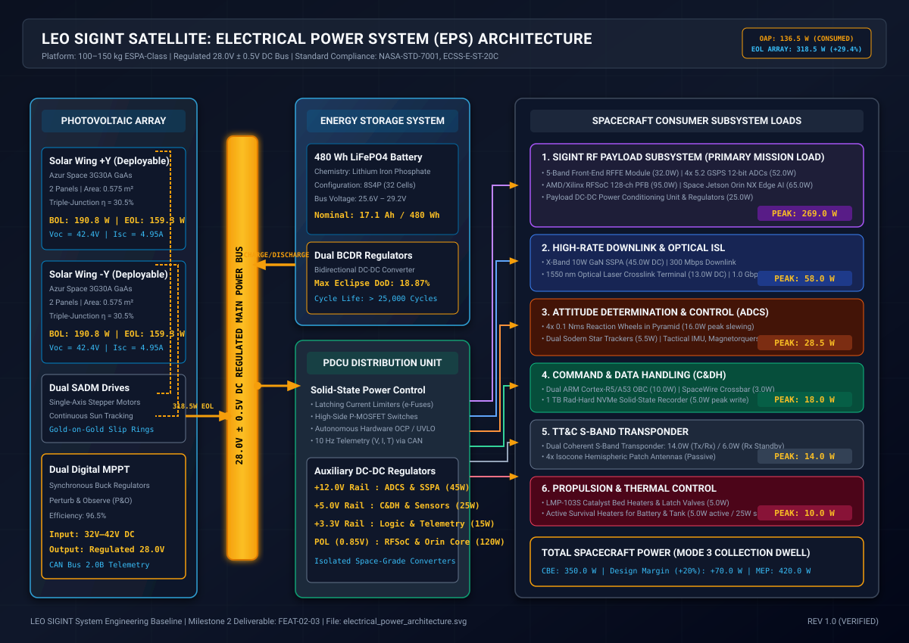
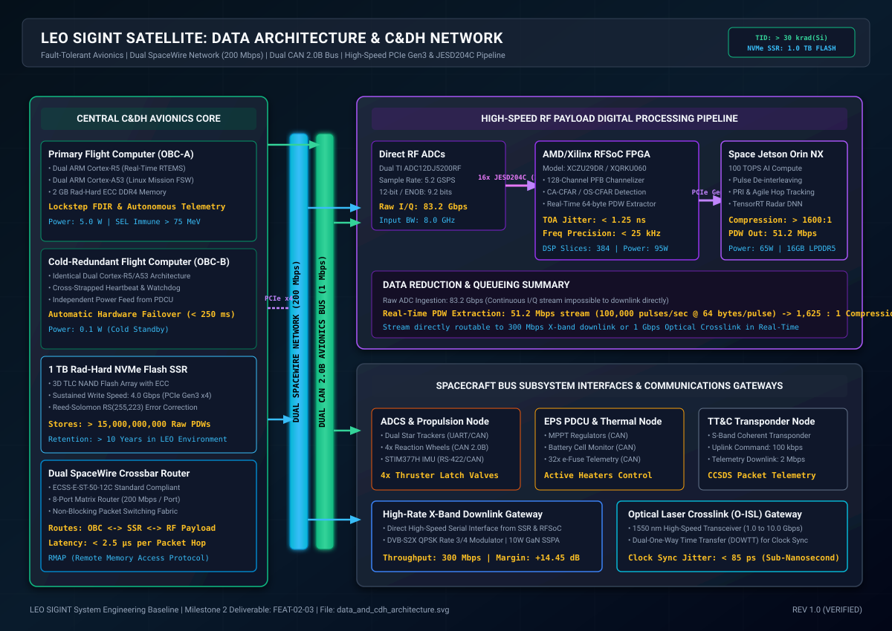
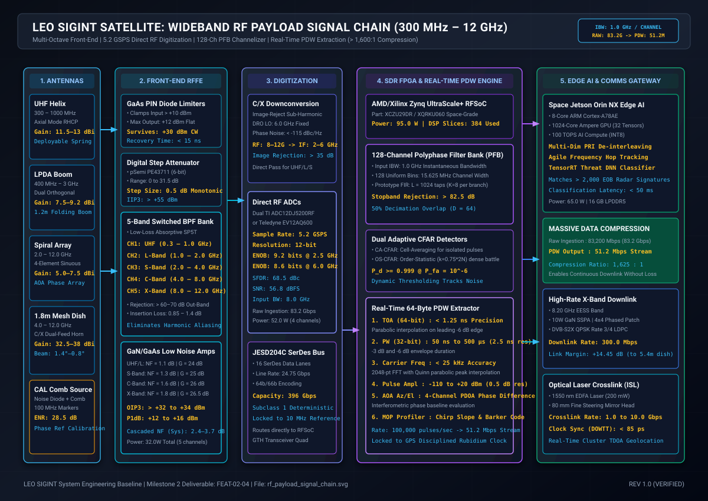
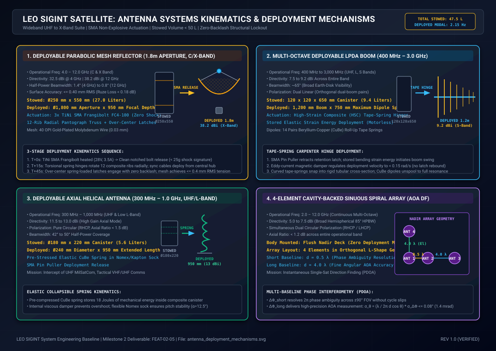
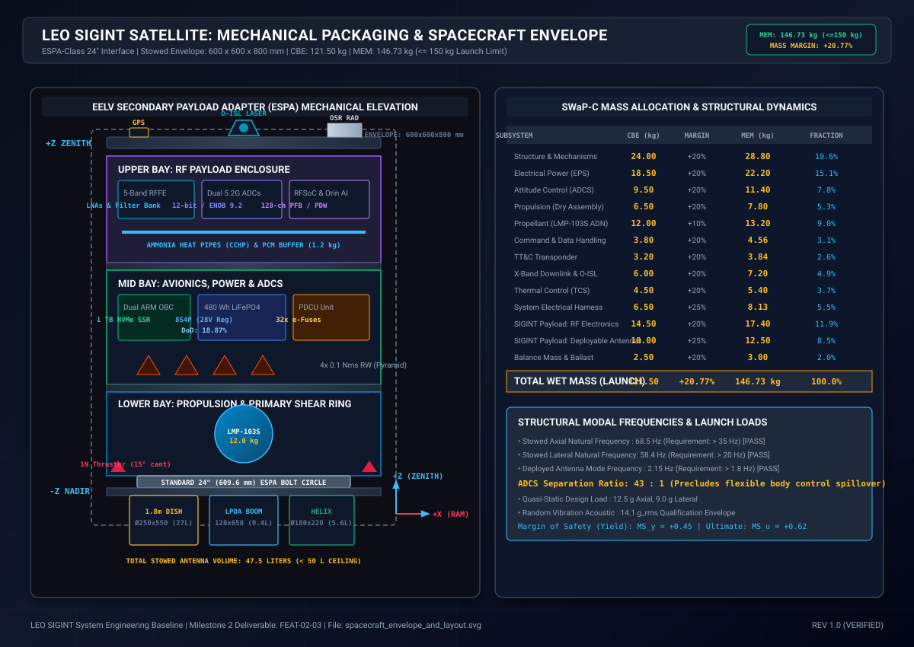
Project Technical Corpus: 10 Comprehensive Markdown Reports
Direct relative links and executive briefs for all underlying engineering reports across the 3 study folders.
01_leo_sigint_overview_and_orbital_mechanics.md
Folder 01Physics and orbital mechanics trade-offs of LEO vs GEO for passive RF intercept. Slant range geometry, free-space path loss models across UHF to X-band, Doppler rate-of-change kinematics, and Walker constellation coverage trades.
02_commercial_and_defense_constellations_benchmark.md
Folder 01Exhaustive benchmarking of 7 commercial and defense constellations: HawkEye 360, Unseenlabs, Spire Global, Horizon Technologies, Kleos Space, NRO NOSS-3 / Intruder, and China Yaogan-30. Failure mode analysis of the "Kleos cluster trap".
03_subsystem_supply_chain_matrix.md
Folder 01Comprehensive catalogue of 30+ qualified aerospace suppliers across 7 subsystem domains for 100–150 kg ESPA satellites. Includes TRL, flight heritage, SWaP metrics, interface protocols, and ITAR-free supply chain options.
04_frequency_bands_regulatory_and_orbital_considerations.md
Folder 01ITU Radio Regulations, passive listening sovereign rights under UN Outer Space Treaty (OST 1967), frequency band allocations from 300 MHz to 12 GHz, atmospheric absorption windows, and debris mitigation compliance (IADC / FCC 5-year deorbit).
01_spacecraft_bus_and_swapc_budget.md
Folder 02Integrated SWaP-C budget table. CBE dry mass 121.5 kg, MEM 146.7 kg (+20.8% margin), peak payload power 269W, solar array EOL 318.5W (+29.4% margin), thermal rejection model, and unit cost breakdown ($4.8M recurring).
02_rf_payload_and_digital_processing.md
Folder 02RF payload engineering deep-dive. 300M–12GHz direct-sampling receiver chain, GaAs limiters (+33 dBm CW protection), 5 switched sub-octave filter banks, 5.2 GSPS 12-bit ADCs, FPGA 1024-channel PFB channelizer, and PDW generation engine.
03_wideband_deployable_antenna_systems.md
Folder 02Dedicated deployable antenna engineering report: 1.8m mesh parabolic reflector (C/X-band, >38.5 dBi), deployable folding LPDA scissor boom (UHF to S-band), quadrifilar helix (L-band), and 4-element cavity spiral array for interferometry.
04_rf_link_budget_and_communications.md
Folder 02High-rate space-to-ground downlink communications engineering. 8.2 GHz X-band 300 Mbps DVB-S2X downlink to a 5.4m ground terminal, yielding +14.45 dB link margin (substantially exceeding the > +4 dB / 20% requirement).
01_conops_five_target_scenarios.md
Folder 03Comprehensive operational CONOPS for 5 key target types: Maritime AIS and naval/coastal radar decollision, GNSS spoofers and multi-kW barrage jammers, tactical UAS C2 datalinks, AEW&C radar sidelobe cataloguing, and tactical VHF/UHF comms.
02_single_and_cluster_geolocation_mathematics.md
Folder 03Mathematical derivations for both single-satellite and constellation geolocation: Doppler rate (df/dt), multi-baseline phase interferometry AOA, distributed TDOA/FDOA hyperbolas/isodops, Cross-Ambiguity Function (CAF), GDOP matrix, and CRLB bounds.